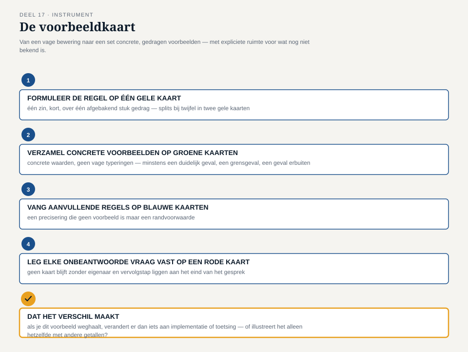

Deel 17 — Example mapping en specification by example
Reader · Ductus-cursus Domain-Driven Design · niveau 2 (professional) · deel 17 van 30
17.1 Waar dit deel over gaat
Deel 16 leverde twee scherp geformuleerde, maar nog niet getoetste regels op: bij de deeltijdwijziging een ondergrensregel waarvan niemand zeker wist of hij bestond, en bij de scheidingsketen een open detectievraag over welke vroege signalen het landschap nu nog niet herkent. Beide regels klinken op het eerste gehoor helder — en beide zijn, zoals dit deel laat zien, veel minder scherp dan ze klinken zodra je ze aan een concreet geval toetst.
Dat is precies het probleem waarvoor dit deel een instrument aanreikt. Een regel als “bij een percentage onder de ondergrens moet een medewerker de wijziging handmatig bevestigen” roept onmiddellijk vragen op zodra je hem naast een echt geval legt: welke ondergrens precies, bevestiging vóór of na de herberekening, wat als de wijziging tijdelijk is, wat als hetzelfde dienstverband twee keer binnen een jaar wijzigt. Zonder concrete voorbeelden blijft een regel een zin die iedereen anders invult. Dit deel introduceert example mapping, een werkvorm ontwikkeld door Matt Wynne, die precies dit gat dicht: een gestructureerd gesprek waarin een team, uitgaande van één regel, concrete voorbeelden verzamelt totdat de regel niet langer voor meerdere uitleg vatbaar is — en waarin de vragen die daarbij opduiken evenveel waard zijn als de voorbeelden zelf.
Aan het eind van dit deel kun je:
- het verschil benoemen tussen een regel, een voorbeeld en een openstaande vraag, en waarom die drie in een gesprek uit elkaar gehouden moeten worden;
- example mapping toepassen om een vage of impliciete regel scherp te krijgen vóórdat hij wordt gebouwd of getest;
- specification by example herkennen als het bredere principe waar example mapping een concrete, tijdgebonden werkvorm van is: specificaties die uit voorbeelden bestaan in plaats van uit abstracte beschrijvingen alleen;
- met de voorbeeldkaart een gesprek structureren van een ruwe regel naar een set concrete, gedragen voorbeelden, inclusief het besluit of een regel te groot is om in één keer te behandelen.
17.2 De casus: twee regels die scherper moeten
Uit het casusdossier: het contextmap-team komt terug, een week na deel 16, met twee regels op tafel die allebei uit dat deel zijn overgebleven — geen van beide af, geen van beide fout, allebei te vaag om ergens op te bouwen.
Foppe opent met een concrete vraag aan Vera: “Jullie ondergrensregel — bij welk percentage precies moet een medewerker handmatig bevestigen?” Vera aarzelt. “Ik dacht altijd: ergens onder de twintig procent. Maar ik heb het nooit ergens zwart-op-wit gezien.” Karsten, die de vraag van de andere kant bekijkt: “En geldt dat voor een wijziging ván twintig procent naar minder, of alleen als het nieuwe percentage zelf onder de twintig ligt? Want dat zijn twee heel verschillende regels.” Otto, zoals gewoonlijk ongeduldig: “Dus we weten het niet. Kunnen we niet gewoon een percentage kiezen en verder gaan?”
Foppe grijpt dit moment aan om het instrument van dit deel te introduceren. “Als we nu een percentage kiezen, kiezen we het uit het niets. Wat we nodig hebben, is niet een getal — het is een paar concrete gevallen, echte of goed doordachte, die ons dwingen precies te zeggen wat de regel wél en niet dekt. Pas als we die gevallen hebben, kiezen we een getal — en dan is het geen gok meer.” Hij tekent drie kolommen op het bord: een gele kaart voor de regel zelf, een paar groene kaarten eronder voor voorbeelden, en, zodra iemand een vraag stelt die niemand kan beantwoorden, een rode kaart erbij. “We noemen dit example mapping. Eén regel, meerdere voorbeelden, en elke vraag die we niet kunnen beantwoorden krijgt een eigen, zichtbare plek — in plaats van dat hij verdwijnt in de discussie.”
Merel Duijvestein, die vanuit haar rol als business analist gewend is aan het werken met concrete voorbeelden bij requirements, herkent de aanpak meteen: “Dit is wat wij ‘specification by example’ noemen als het om een compleet document gaat — hier doen jullie het gericht, voor precies twee regels.” Foppe knikt: “Example mapping is een gesprek van hooguit een half uur, gericht op één regel of één klein stukje gedrag. Specification by example is het bredere idee waar deze werkvorm een praktische uitwerking van is: dat een specificatie pas compleet is als hij bestaat uit concrete voorbeelden, niet alleen uit een beschrijving in algemene termen.”

17.3 Example mapping: vier kaarten, één gesprek
Example mapping werkt met vier soorten kaarten, elk met een eigen kleur en een eigen functie in het gesprek.
De gele kaart — de story of de regel. Bovenaan het gesprek staat, op één gele kaart, de regel die wordt uitgediept: kort, in een enkele zin. “Bij een percentage onder de ondergrens moet een medewerker de wijziging handmatig bevestigen.” Er is precies één gele kaart per gesprek — als een gesprek meerdere gele kaarten nodig lijkt te hebben, is de regel eigenlijk meerdere regels tegelijk, en dat is zelf een signaal (zie §17.5).
De blauwe kaart — een aanvullende regel of randvoorwaarde. Zodra het gesprek een aanvullende regel blootlegt die de hoofdregel verder inperkt of preciseert — bijvoorbeeld “de ondergrens geldt voor het nieuwe percentage, niet voor de omvang van de wijziging” — komt die op een eigen, blauwe kaart naast de gele. Blauwe kaarten ontstaan vaak pas tijdens het gesprek zelf, als antwoord op een vraag die eerst rood was.
De groene kaart — een concreet voorbeeld. Voor elk voorbeeld dat de regel illustreert, komt een groene kaart bij: een concreet geval, met concrete waarden, dat laat zien wat de regel in dat geval oplevert. “Een dienstverband van 32 uur wijzigt naar 6 uur (17%) — handmatige bevestiging vereist.” Een goed voorbeeld is specifiek genoeg om zonder verdere discussie te kunnen worden getoetst: geen “een lage wijziging”, maar exacte, concrete waarden.
De rode kaart — een openstaande vraag. Zodra het gesprek een vraag oplevert die niemand aan tafel kan beantwoorden, komt die op een rode kaart — niet als storing, maar als expliciete, zichtbare erkenning dat hier iets ontbreekt. Een rode kaart wordt tijdens het gesprek zelf niet uitgezocht; hij wordt genoteerd, en het gesprek gaat verder. Precies zoals een hotspot bij EventStorming (deel 15) de opbrengst van de sessie is, niet de ruis, is een rode kaart bij example mapping een van de nuttigste uitkomsten van het gesprek — hij voorkomt dat een team een regel bouwt op een aanname die niemand ooit hardop heeft uitgesproken.
Het gesprek zelf verloopt niet in een vaste volgorde van kaarttypen — het is een levendig gesprek waarin de facilitator (in dit geval opnieuw Foppe) vragen stelt die voorbeelden uitlokken, voorbeelden die op hun beurt aanvullende regels blootleggen, en aanvullende regels die weer om nieuwe voorbeelden vragen. Wat wél vaststaat, is de discipline: elke uitspraak krijgt de kaart die bij zijn functie hoort, in plaats van dat alles door elkaar in notulen verdwijnt.

17.4 De ondergrensregel getoetst
Het team past example mapping toe op de ondergrensregel uit deel 16. De gele kaart staat er al: “bij een percentage onder de ondergrens moet een medewerker de wijziging handmatig bevestigen.” Foppe vraagt om het eerste voorbeeld.
Vera begint met wat ze zelf als het duidelijkste geval beschouwt: een dienstverband van 32 uur dat wijzigt naar 6 uur — 17% van een volledige werkweek. “Dat moet, denk ik, onder de ondergrens vallen.” Groene kaart. Karsten vraagt meteen door met een tweede geval: een dienstverband dat van 8 naar 4 uur wijzigt — ook een fors relatief verschil, maar het resultaat, 4 uur, is een percentage dat niemand aan tafel zeker weet hoe te wegen zonder een referentiepunt. Rode kaart: wat is de ondergrens precies — een percentage van een fulltime werkweek, of een absoluut aantal uren?
Otto brengt een derde geval in dat de regel op scherp zet: een dienstverband van 40 naar 36 uur — een relatief kleine wijziging, ruim boven elke denkbare ondergrens, maar Otto vraagt: “Geldt de regel voor de nieuwe situatie, of voor de omvang van de wijziging zelf? Want als iemand in twee stappen van 40 naar 15 uur gaat, elk binnen de grens, glipt de grote wijziging er dan doorheen?” Dit voorbeeld levert geen groene kaart op — het is te hypothetisch om als concreet voorbeeld te tellen — maar wel een tweede rode kaart: is de ondergrens gebaseerd op het eindresultaat, of op de omvang van elke afzonderlijke wijziging, en wat gebeurt er bij een reeks kleine wijzigingen die samen een grote wijziging vormen?
Willemijn, die vanuit haar ervaring met het Nabestaandenloket gewend is precies dit soort vragen te stellen, brengt een vierde geval in dat wél tot een blauwe kaart leidt: een deeltijdwijziging die tijdelijk is — bijvoorbeeld voor de duur van een zorgverlof — en na een vastgestelde periode automatisch terugkeert naar het oorspronkelijke percentage. Blauwe kaart: een tijdelijke wijziging met een vooraf vastgestelde einddatum volgt een lichtere regel — geen handmatige bevestiging, wel een automatische controle bij de daadwerkelijke terugkeer. Dat is geen voorbeeld van de hoofdregel, maar een aanvullende regel die de hoofdregel preciseert: niet elke deeltijdwijziging is hetzelfde soort deeltijdwijziging.
Aan het eind van twintig minuten staan er op het bord: één gele kaart, één blauwe kaart, twee groene kaarten en twee rode kaarten. Vera stelt vast: “We hebben de regel niet opgelost. Maar we weten nu precies wélke twee vragen we moeten beantwoorden voordat we hem kunnen bouwen — en dat is meer dan we vanochtend wisten.” Foppe: “Dat is precies het punt van dit instrument. Het lost een regel niet op. Het maakt zichtbaar wat er nog ontbreekt om hem op te lossen — en het voorkomt dat iemand straks een percentage kiest zonder dat iemand anders weet waaróm dat percentage is gekozen.”

17.5 Wanneer een gele kaart eigenlijk twee regels is
Het tweede deel van de sessie is voor de detectievraag uit deel 16: welke vroege signalen had het landschap al kunnen herkennen bij de laat vastgestelde scheiding uit Daans verhaal. Merel formuleert een eerste gele kaart: “als er een signaal binnenkomt dat op een scheiding kan wijzen, wordt dat gemarkeerd voor nader onderzoek.” Het gesprek levert al snel twee heel verschillende soorten voorbeelden op: een adreswijziging van een partner als nevenpersoon (zoals in Daans verhaal), en een wijziging in een begunstigde bij een uitkeringsaanvraag. Beide zijn concrete, geldige voorbeelden — maar Willemijn merkt op dat de vervolgstap bij beide volledig anders is: het eerste vraagt om een gerichte navraag bij de deelnemer, het tweede is vaak al onderdeel van een lopend aanvraagproces waar iemand toch al naar kijkt.
Foppe herkent het patroon en benoemt het expliciet: “Als de voorbeelden onder één gele kaart telkens een ander soort vervolgstap nodig hebben, is dat een teken dat de gele kaart eigenlijk twee regels dekt, samengeperst tot één zin.” Het team splitst de kaart: een gele kaart voor “een signaal dat op zichzelf al reden is voor gerichte navraag” (met het adresvoorbeeld als groene kaart eronder), en een tweede gele kaart voor “een signaal dat wordt meegenomen in een reeds lopend proces” (met het begunstigde-voorbeeld eronder). Dit splitsen is zelf onderdeel van de methode, niet een afwijking ervan: example mapping is precies bedoeld om dit soort te-grote regels vroeg te ontdekken, vóórdat iemand een enkele, te brede regel gaat bouwen die twee heel verschillende situaties probeert te dekken.
Voor de eerste, gesplitste gele kaart levert het gesprek een derde soort inzicht op dat niet in een van de vier kaarttypen past totdat het team het zelf herkent: een rode kaart die, na een korte discussie, meteen wordt beantwoord en zo alsnog een blauwe kaart wordt. De vraag was: wie voert de gerichte navraag uit — de context die het signaal ontving, of een centraal aanspreekpunt? Karsten en Vera beantwoorden hem samen ter plekke, op basis van hoe hun teams nu al werken: de context die het signaal ontving voert de navraag uit, met een verplichting om het resultaat — gevonden of niet — terug te melden aan het Mutatieplatform. Blauwe kaart. Dit voorbeeld illustreert dat een rode kaart niet per se blijft liggen; soms wordt hij binnen het gesprek zelf beantwoord, en verhuist hij dan naar blauw.

17.6 Specification by example: het bredere principe
Example mapping is, zoals Merel in §17.2 al aangaf, een concrete, tijdgebonden werkvorm — een gesprek van een half uur, gericht op één regel. Specification by example is het bredere principe waar die werkvorm een uitwerking van is: het idee dat een specificatie pas volledig en ondubbelzinnig is wanneer ze bestaat uit concrete voorbeelden, in plaats van (of naast) een beschrijving in algemene termen. Een zin als “bij een lage deeltijdwijziging is bevestiging vereist” is een bewering; een concreet voorbeeld met exacte waarden en een vastgesteld resultaat is een specificatie — omdat een voorbeeld, anders dan een bewering, direct te toetsen is: het geval doet zich voor, en het systeem (of de medewerker) reageert er wel of niet zoals het voorbeeld voorschrijft.
Dat maakt de groene kaarten uit een example-mappinggesprek meer dan aantekeningen: ze zijn, in potentie, de basis voor acceptatiecriteria — de concrete gevallen waaraan later, wanneer het Mutatieplatform daadwerkelijk wordt gebouwd, kan worden getoetst of de implementatie de regel goed heeft begrepen. Een veelgebruikte, generieke structuur om zo’n voorbeeld eenduidig op te schrijven bestaat uit drie delen: de uitgangssituatie, de gebeurtenis die zich voordoet, en het verwachte resultaat — bijvoorbeeld: uitgangssituatie: een dienstverband van 32 uur; gebeurtenis: een deeltijdwijziging naar 6 uur wordt doorgegeven; resultaat: de wijziging wordt gemarkeerd voor handmatige bevestiging vóór verwerking. Deze driedeling is geen uitvinding van één bepaald team of product — ze is een generieke, veelgebruikte manier om een voorbeeld ondubbelzinnig vast te leggen, en dit deel gebruikt haar uitsluitend als vorm, niet gekoppeld aan een specifiek gereedschap.
Het belangrijkste om hier scherp te houden: specification by example gaat niet over testen schrijven. De groene kaarten van dit deel worden pas relevant voor testen op het moment dat het Mutatieplatform daadwerkelijk wordt gebouwd — dat bouwwerk valt, net als bij het Nabestaandenloket in niveau 1, buiten deze cursus. Wat dit deel wél oplevert, is de scherpte die nodig is voordat er ooit gebouwd wordt: een regel die niet meer voor meerdere uitleg vatbaar is, met expliciet benoemde randgevallen en een expliciete lijst van wat nog niet bekend is.
17.7 Vooruitblik: waar voorbeelden een aggregaatgrens raken
Tegen het eind van de sessie brengt Vera een observatie in die het team niet had zien aankomen. Bij het doorlopen van het tijdelijke-wijziging-voorbeeld uit §17.4 (de blauwe kaart over zorgverlof) merkt ze op: “Om deze regel goed te kunnen toetsen, moet het systeem op het moment van de automatische terugkeer weten wat het oorspronkelijke percentage was — en dat gegeven leeft, in het proces dat we in deel 16 uitschreven, binnen dezelfde voorlopige aggregaatgrens als het huidige percentage. Maar de controle zelf, en de vraag of die op tijd plaatsvindt, is een verantwoordelijkheid die ergens anders lijkt te moeten liggen — bij een soort bewaking die niet gebonden is aan één dienstverband, maar aan een deadline.”
Foppe herkent het belang van de opmerking zonder hem inhoudelijk af te ronden: “Dat is precies het soort vraag dat een concreet voorbeeld blootlegt en een abstracte regel niet. Jullie hebben nu, dankzij dit voorbeeld, een aanwijzing dat de voorlopige aggregaatgrens van deel 16 misschien niet alles dekt wat dit ene voorbeeld vraagt. Dat gaan we hier niet oplossen — dat is precies waar deel 18 voor bedoeld is, wanneer we de aggregaatgrenzen van het hele landschap opnieuw bekijken, nu met meerdere teams die tegelijk aan aangrenzende stukken bouwen.” Otto voegt er, voor het eerst zonder ongeduld, aan toe: “Dat is dan wel het derde deel op rij waarin we een vraag vinden die we niet vandaag beantwoorden.” Vera: “Ja. Maar het zijn wel steeds scherpere vragen.”
17.8 De werkvorm: de voorbeeldkaart
Het instrument van dit deel is de voorbeeldkaart: een sjabloon om, voor één regel tegelijk, een example-mappinggesprek te structureren van een vage bewering naar een set concrete, gedragen voorbeelden — met expliciete ruimte voor wat nog niet bekend is.
De vier stappen
Stap 1 — Formuleer de regel op één gele kaart. Eén zin, kort, over één afgebakend stuk gedrag. Blijkt tijdens het gesprek dat de regel eigenlijk twee regels dekt (§17.5), splits dan in twee gele kaarten met elk hun eigen vervolg, in plaats van door te werken met een regel die twee dingen tegelijk probeert te zeggen.
Stap 2 — Verzamel concrete voorbeelden op groene kaarten. Voor elk voorbeeld: concrete waarden, geen vage typeringen (“een lage wijziging” is geen voorbeeld; “32 uur naar 6 uur” wel). Streef naar minstens drie voorbeelden per regel: één duidelijk geval, één grensgeval, en één geval dat de regel juist niet zou moeten raken.
Stap 3 — Vang aanvullende regels op blauwe kaarten. Zodra een voorbeeld een precisering van de hoofdregel blootlegt die niet zelf een nieuw voorbeeld is maar een randvoorwaarde, komt die op een blauwe kaart naast de gele. Een blauwe kaart mag op zijn beurt weer om eigen groene voorbeelden vragen.
Stap 4 — Leg elke onbeantwoorde vraag vast op een rode kaart. Los een rode kaart niet op tijdens het gesprek tenzij het antwoord meteen en zonder discussie beschikbaar is (zoals in §17.5, waar een rode kaart binnen het gesprek naar blauw verhuisde). Blijft een vraag open, dan krijgt hij een eigenaar en een vervolgstap — geen kaart blijft zonder bestemming liggen aan het eind van het gesprek.
Het veld dat het verschil maakt
Onder de vier stappen staat een vijfde, afsluitend veld, toe te passen op elke groene kaart afzonderlijk:
Dat het verschil maakt: als je dit voorbeeld weghaalt, verandert er dan iets aan hoe iemand de regel zou implementeren of toetsen — of illustreert dit voorbeeld alleen, met andere getallen, hetzelfde als een voorbeeld dat er al ligt?
Dit veld voorkomt dat een example-mappinggesprek eindigt met een stapel groene kaarten die er indrukwekkend uitziet maar feitelijk drie keer hetzelfde voorbeeld met andere cijfers herhaalt. Foppe past het toe op de vier voorbeelden uit §17.4 en §17.5: het 32-naar-6-uur-voorbeeld en het 40-naar-36-uur-voorbeeld illustreren, zo blijkt bij toetsing, elk een ander punt (respectievelijk “dit valt overduidelijk binnen de regel” en “dit valt overduidelijk erbuiten, tenzij de reeksvraag anders uitpakt”) en blijven allebei staan; een vijfde voorbeeld dat het team ter plekke bedenkt (36 naar 30 uur) blijkt bij toetsing niets toe te voegen aan wat het 40-naar-36-uur-voorbeeld al liet zien, en wordt geschrapt.

17.9 Terug naar de casus, en vooruit
Aan het eind van dit deel liggen er twee voorbeeldkaarten op tafel, geen van beide volledig afgerond, allebei aanzienlijk scherper dan de twee regels waarmee de sessie begon. De ondergrensregel heeft twee openstaande vragen (het referentiepunt van het percentage, de reeksvraag) die iemand — Vera en Otto samen, met een deadline die Iris later die week vaststelt — buiten deze sessie om moet beantwoorden voordat het Mutatieplatform de regel kan bouwen. De detectieregel is gesplitst in twee scherpere regels, met één vraag die binnen het gesprek zelf al werd beantwoord.
Daan vat de sessie samen in het verslag aan Iris met een zin die de kern van dit deel raakt: “We hebben geen enkele regel vandaag definitief gemaakt. Maar we hebben van twee vage zinnen twee sets concrete voorbeelden gemaakt, en van die voorbeelden weten we nu precies welke nog een antwoord missen — in plaats van dat we pas zouden ontdekken dát ze een antwoord misten op het moment dat iemand ze verkeerd bouwde.”
Vooruit naar deel 18. Vera’s observatie in §17.7 — dat het tijdelijke-wijziging-voorbeeld een vraag oproept over waar de voorlopige aggregaatgrens van deel 16 precies loopt — is het derde signaal in twee delen tijd dat wijst op hetzelfde, grotere vraagstuk: nu meerdere teams tegelijk aan aangrenzende stukken van het Mutatieplatform bouwen, houden de grenzen die één team alleen kon trekken nog wel stand? Deel 18 herziet de aggregaatgrenzen van het complete landschap met precies die vraag als uitgangspunt.